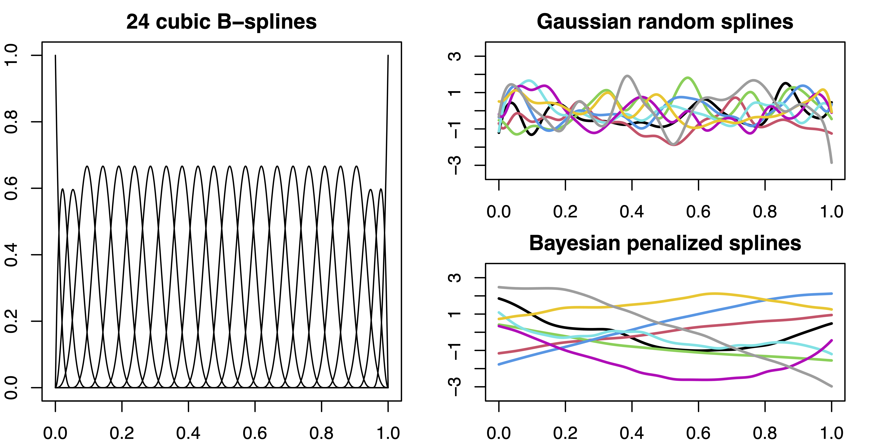
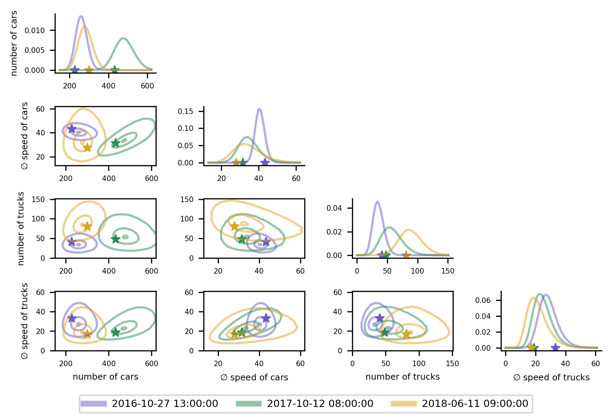
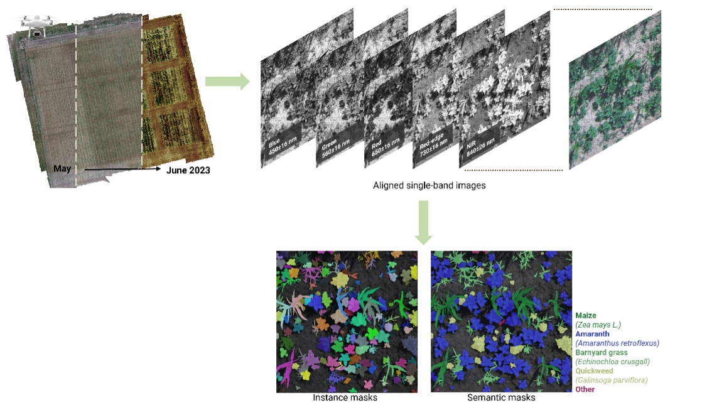

- Methods for Big Data
Blog
-

Uncertainty-Aware Trajectory Prediction via Rule-Regularized Heteroscedastic Deep Classification
(By Christian Schlauch and Nadja Klein, posted on July 18, 2025)We propose SHIFT (Spectral Heteroscedastic Informed Forecasting for Trajectories), a novel training framework for motion prediction in autonomous driving. SHIFT combines well-calibrated uncertainty modeling through last-layer heteroscedastic Gaussian processes and informative priors derived from automated rule extraction.
-

Posterior Concentration Rates for Bayesian Penalized Splines
(By Paul Bach and Nadja Klein, posted on May 05, 2025)We close a gap in the literature and study the asymptotic properties of Bayesian penalized splines. We show that near-optimal posterior concentration can be achieved if the order of the penalty matches the regularity of the unknown function and if the hyperprior on the smoothing variance is appropriately chosen.
-

Truly Multivariate Structured Additive Distributional Regression
(By Lucas Kock and Nadja Klein, posted on April 11, 2025)We propose a truly multivariate distributional regression model. Building on copula regression, we model the dependence structure of the response through a Gaussian copula, while the marginal distributions can vary across components. Each parameter of the flexible distribution is linked to covariates. Our model is highly parameterized but estimation becomes feasible with Bayesian inference employing shrinkage priors.
-

Boosting distributional copula regression for bivariate binary, discrete and mixed responses
(By Guillermo Briseño Sanchez and Nadja Klein, posted on April 01, 2025)We extend the current component-wise boosting methodology for distributional copula regression to accommodate prevalent type of variables in biomedical research: bivariate binary, bivariate discrete, as well as mixed binary-continuous. One of the benefits of our boosting approach is its ability to handle high-dimensional input variables. We illustrate our proposed method by analysing three challenging datasets as well as a number of experiments.
-

Building Blocks for Robust and Effective Semi-Supervised Real-World Object Detection
(By Moussa Kassem Sbeyti and Nadja Klein, posted on March 27, 2025)Semi-supervised object detection (SSOD) reduces the need for extensive labeled datasets but faces real-world challenges such as class imbalance, label noise, and unreliable pseudo-labels. We investigate the impact of these challenges on SSOD and propose four novel data-centric building blocks—Rare Class Collage (RCC), Rare Class Focus (RCF), Ground Truth Label Correction (GLC), and Pseudo-Label Selection (PLS)—that improve SSOD frameworks. Our methods achieve up to a 6% performance increase by enhancing label quality and class representation while maintaining computational efficiency.
-

Leveraging Informative Priors for Robust and Data-Efficient Motion Prediction
(by Christian Schlauch and Nadja Klein, posted on March 13, 2025)Together with the Continental Automotive GmbH, we developed an informed learning approach for deep learning motion prediction models in autonomous driving. Using probabilistic models to learn informative priors from synthetic training labels, we regularize the training on observed data, improving data-efficiency and robustness of state-of-the-art models.
-

A UAV-based dataset for plant monitoring in maize fields
(by Ekin Celikkan and Nadja Klein, posted on February 21, 2025)WeedsGalore is a novel agricultural dataset, focusing on crop and weed segmentation from UAV imagery in croplands. The high plant cover (in terms of both number and area) and the availability of five spectral bands are key distinguishing characters of this dataset. When used with state-of-the-art deep neural networks, it leads to models that can effectively segment weeds, even in unseen fields.